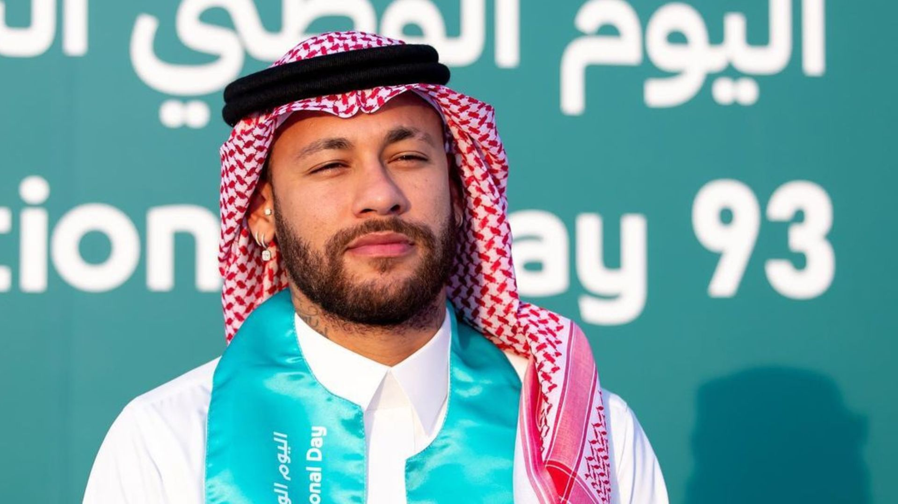

Neymar da Silva Santos Júnior

Biografia de Neymar
Neymar (1992) é um futebolista brasileiro, considerado um dos maiores da história. Ganhou diversos títulos jogando pelo Santos Futebol Clube, onde iniciou sua carreira aos 11 anos de idade.
Sua posição é atacante, atuando como ponta-esquerda. Neymar jogou em diversos times. Seu mais recente contrato foi assinado com o Al-Hilal da Arábia Saudita, onde vai jogar durante dois anos.
Infância e Começo da Carreira
Neymar da Silva Santos Júnior nasceu em Mogi das Cruzes, São Paulo, no dia 05 de fevereiro de 1992. Filho de Neymar da Silva Santos e de Nadine Santos, com 11 anos de idade já chamava a atenção de especialistas de futebol. Nessa época jogava na equipe de futebol de salão da "Portuguesa Santista".
Santos Futebol Clube
Em 2003 Neymar foi contratado pelo "Santos Futebol Clube" para fazer parte das divisões de base do time de futebol. Em 2009, fez sua estreia no time profissional na partida contra o Oeste, no estádio do Pacaembu, pelo campeonato Paulista. Foi considerado jogador revelação do campeonato no qual o Santos conquistou o vice-campeonato.
Em 2010 foi destaque novamente, desta vez tendo o seu time se sagrado campeão paulista. Nesse campeonato Neymar marcou cinco gols em cinco clássicos, proeza conseguida graças a uma regularidade pouco vista em outros jogadores. No mesmo ano foi campeão pela "Copa do Brasil", torneio no qual foi artilheiro com onze gols.
Em 2011 foi bicampeão. Também em 2011 foi campeão da "Taça Libertadores", na final com o Peñarol, tendo feito um dos gols no resultado de 2 x 1.
Barcelona
Em março de 2013 Neymar foi contratado pelo "Barcelona". Em sua apresentação oficial, no dia 3 de junho de 2013, o jogador foi recepcionado no Camp Nou por 56 mil torcedores.
Neymar passou quatro anos no Barcelona, realizou 186 jogos oficiais, fez 105 gols e ganhou oito títulos. Permaneceu no Barcelona até julho de 2017. No dia 2 de agosto de 2017 o Barcelona anunciou a saída de Neymar do clube.
Paris Saint-Germain (PSG)
Neymar foi apresentado aos torcedores do PSG no dia 4 de agosto de 2017, no estádio Parc des Princes, em Paris.
O PSG pagou uma multa rescisória ao Barcelona no valor de 222 milhões de euros (821,4 milhões de reais), tornando Neymar o jogador mais caro até aquele momento.
No PSG Neymar conquistou o “Campeonato Francês” das temporadas 2017-2018, 2018-2019 e 2019-2020. Conquistou 3 vezes a “Copa da França” e 2 vezes a “Copa da Liga Francesa, e 2 vezes a “Supercopa da França”.
Títulos Conquistados por Neymar
Supercopa da França 2018;
Copa da Liga Francesa 2017-18;
Copa da França 2017-18;
Campeonato Francês 2017-18; 2018–19, 2019–20, 2021–22;
Copa do Rei 2014-15; 2015-16 e 2016-17;
Campeonato Espanhol 2014-15, 2015-16;
Supercopa da Espanha 2013 e 2016;
Liga dos Campeões da UEFA 2014-15;
Supercopa da UEFA 2015;
Copa do Mundo de Clubes da FIFA 2015;
Tricampeão Paulista, 2012;
Artilheiro do Paulista, 20 gols, 2012;
Melhor Jogador do Campeonato Paulista, 2012;
Gol mais bonito da Temporada, 2012;
Prêmio Puskás, Melhor Jogador da Américas, Jornal El Pais, 2011;
Vice-campeão Mundial de Clubes, 2011;
Bola de Ouro, Melhor Jogador do Brasileiro, Revista Placar, 2011;
Chuteira de Ouro, Revista Placar e ESPN Brasil, 2011;
Prêmio Brasil Olímpico, COB, Categoria Futebol, 2011;
Melhor Jogador do Campeonato Brasileiro, CBF, 2011;
Melhor Jogador da Libertadores, 2011;
Campeão Super Clássico das Américas pela Seleção Brasileira, 2011;
Prêmio Ginga Esporte Interativo, Gol Mais Bonito, 2011;
Prêmio Ginga Esporte Interativo, Melhor Jogador da Temporada, 2011;
Vice-artilheiro da Libertadores, 6 gols, 2011;
Campeão da Libertadores da América, 2011;
Melhor Jogador do Campeonato Paulista, 2011;
Bicampeão Paulista, 2011;
Artilheiro do Sul-Americano Sub-20, 9 gols, 2011;
Campeão Sul-Americano Sub-20, Seleção Brasileira, 2011;
Artilheiro da Copa do Brasil, 11 gols, 2010;
Campeão da Copa do Brasil, 2010;
Campeão Paulista 2010.